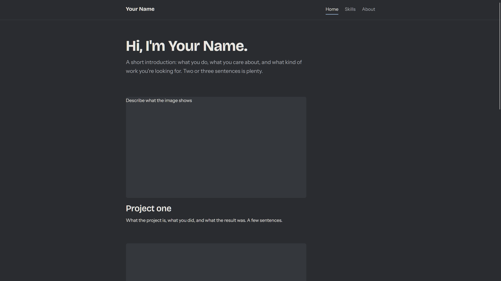
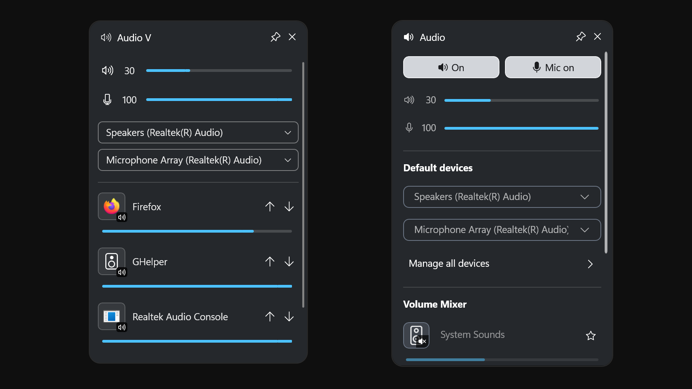

And this is my AI showcase for TCSS 490. This website is currently a work in progress.
Artifact 1: Your Portfolio (This Website)

About:
This website was created using the web version of Claude (Sonnet 5.5). This was my first foray into AI coding, and I was impressed.
The above image shows what the generated site looked like. (I intend to customize it more over time.) And the layout is based
on my existing Game Design Portfolio. I've never made anything with HTML or CSS, so needless to say, this is better than what I could
have produced in an afternoon on my own.
Artifact 2: Custom Audio Widget

About:
For this Artifact I created a custom Audio widget for the Windows Game Bar overlay. My goal was to improve upon the default audio widget,
while still matching the design language of other Game Bar widgets. Above you can see my widget “Audio V” (left) side by side with the default
widget (right). The immediately noticeable difference is of course the compactness of the UI. My widget eliminates unnecessary headers and
inefficient design choices, like the large mute buttons. The only functionality lost is the “manage all devices” menu, which I’ve never found
useful. My widget also adds the ability to deprioritize audio sources in the mixer. This allows you to set and forget sources while having new
sources appear higher on the list. Great if you frequently open new applications, like games, and don’t want them to get buried in the mixer.
There are some other changes as well, but they’re relatively subtle.
This project was created using Claude Desktop with almost no code input from me. I started my design process by identifying the core
functions I wanted, and drawing potential layouts on paper. Then I worked closely with Claude to produce a functional build. And finally,
I spent a significant amount of time ironing out the logic and refining the style. The time breakdown was around 20% planning,
30% core functionality, and 50% style and logic refinement. (10 - 11 hours total.)
This is a fully functional build. In the future I plan to do some performance optimizations and create a shipping build. Then
I’ll probably submit it to the official store.
Artifact 3: AI NPC Chatter Generator (Something with AI in it)
About Project three
What the project is, what you did, and what the result was. A few sentences.
Artifact 4: Telemedicine / primary care website (Something for someone else)
About Project four
What the project is, what you did, and what the result was. A few sentences.
Artifact 5: Custom HE Keyboard Software/Firmware? (Moonshot)
About Project five
What the project is, what you did, and what the result was. A few sentences.